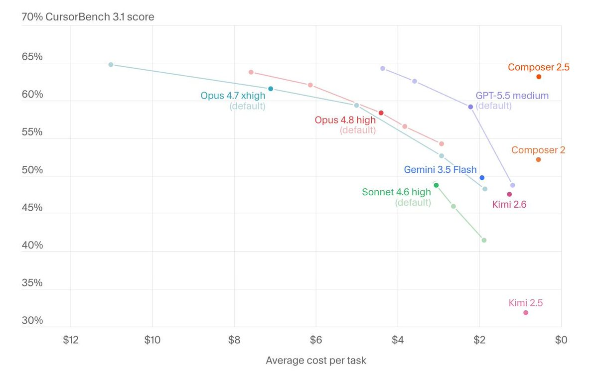
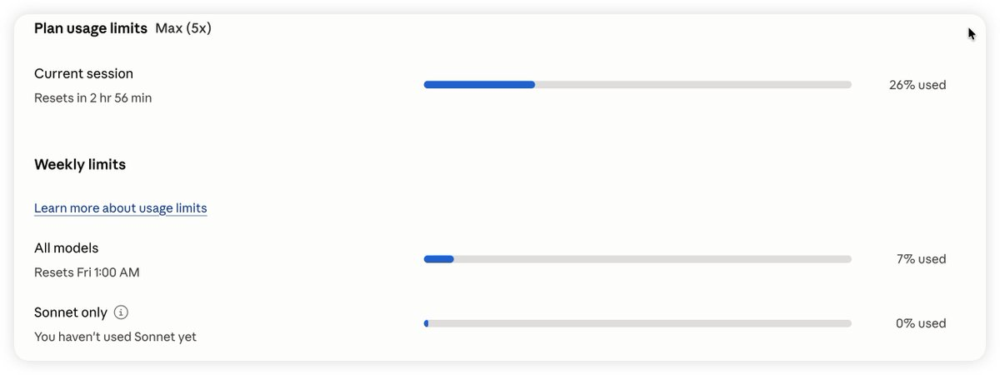

奶昔🥤
@realNyarime
@Jiaxi_Cui opus48 max表现下降，整体成本下降，xh性价比高
但是都不如gpt5.5


Panda
@Jiaxi_Cui
用了几个小时 4.8，怎么感觉还不如 4.7
不过从 4.5 开始，每一代 Opus 的体感好像都差不多：能用，但没太多惊喜
现在基本只用来做前端页面修修补补、调调设计。以前它在方案设计和文档编写上还能碾压 Codex，现在这个优势也越来越不明显了。
前几个月 Codex https://t.co/6zJlfQYNNW